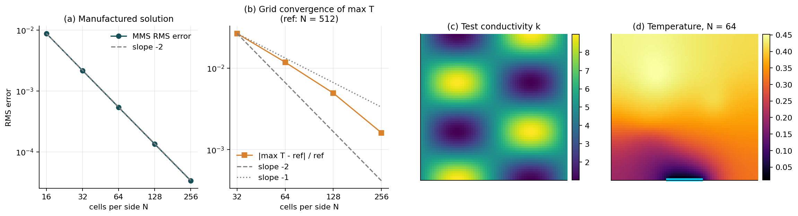
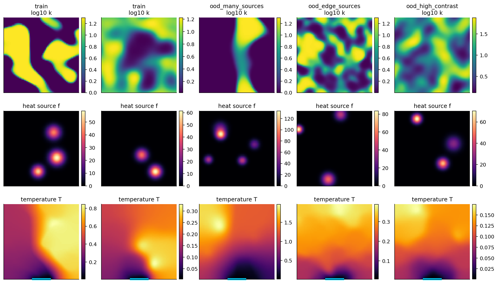
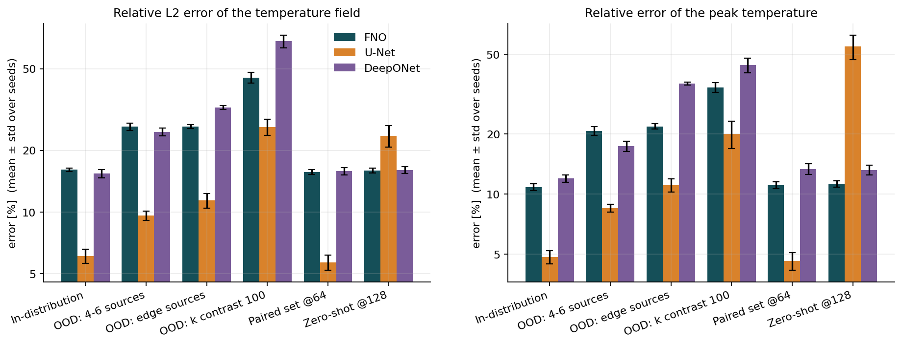
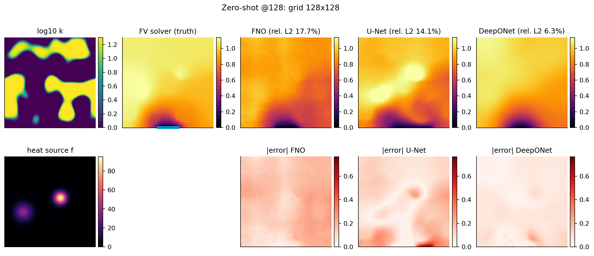
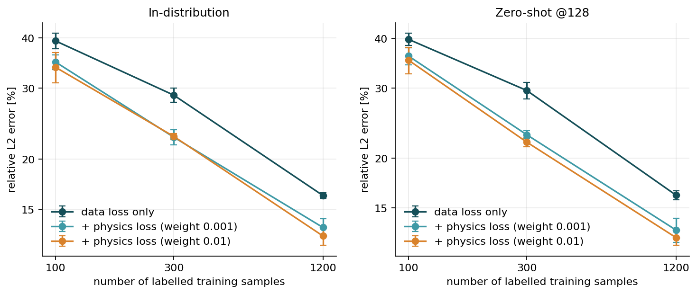
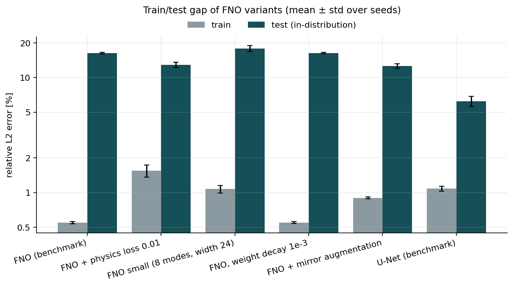
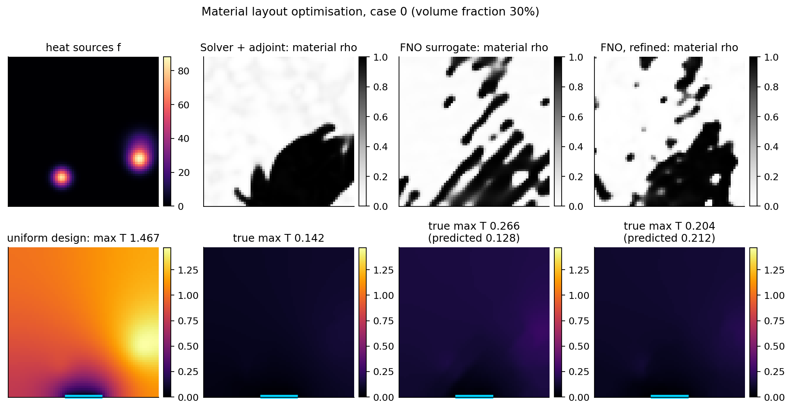
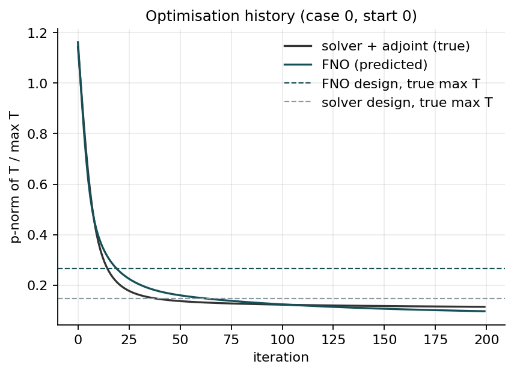
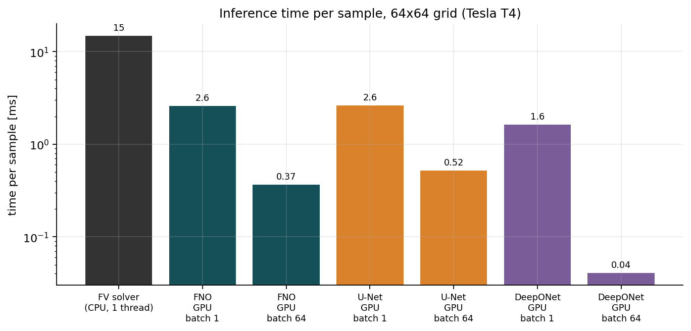

Neural-Operator Surrogates for Thermal Design: What Works and What Doesn't
This project compares a Fourier Neural Operator, a U-Net and DeepONet on 2D steady heat conduction in a heat-spreader plate. The surrogates are then used to optimise where to place high-conductivity material. Every design they propose is re-checked with a verified finite-volume solver, and every result is reported as measured.
What the experiments show
The benchmark uses 5 random seeds and the ablations use 3. Models were trained on a Colab Tesla T4, and all numbers are mean ± std across seeds.
U-Net is the most accurate at a fixed grid
Its locality bias suits the sharp two-phase material interfaces. It reaches 6.1 % relative L2 error, against 16.1 % (FNO) and 15.4 % (DeepONet).
FNO is resolution-invariant
On paired problems its error is 15.7 % at 64×64 and 15.9 % at 128×128. The U-Net goes from 5.7 % to 23.5 %, and its peak-temperature error rises to 55 %.
Physics loss helps at every data size
The residual of the same discrete operator that generated the labels lowers the FNO error from 39 → 34 %, 29 → 23 % and 16 → 13 % for 100, 300 and 1200 training samples.
The FNO is data-limited, not over-sized
A smaller FNO did worse. Exact mirror-symmetry augmentation (→ 12.6 %) and the physics loss (→ 12.9 %) both helped. These controls were declared before running.
Surrogate optimisation gets exploited
At the designs the optimiser found, the FNO under-predicts the peak temperature by 27–52 %. Those designs are 1.9–2.6× hotter than the adjoint solver's designs.
Refinement fixes the prediction, not the design
Solving 88 visited designs and fine-tuning brings the prediction error within ±8 %. The designs remain 1.4–2.0× worse than the adjoint result, and the loop takes longer.
A verified finite-volume solver
The PDE is −∇·(k∇T) = f on the unit square. A heat sink (T = 0) covers the middle 25 % of the bottom edge, and the rest of the boundary is adiabatic. The solver uses cell-centred finite volumes with harmonic-mean face conductivities and a sparse LU solve.


FNO vs U-Net vs DeepONet
All three models have a similar parameter budget (1–2.4 M) and were trained for the same 15 000 steps with a relative-L2 loss. None was tuned individually.
| Relative L2 error | In-dist. | 4–6 sources | Edge sources | k contrast 100 | Paired @64 | Zero-shot @128 |
|---|---|---|---|---|---|---|
| FNO (2.37 M) | 16.1 ± 0.3 % | 26.1 ± 1.1 % | 26.1 ± 0.6 % | 45.3 ± 2.7 % | 15.7 ± 0.4 % | 15.9 ± 0.5 % |
| U-Net (1.95 M) | 6.1 ± 0.5 % | 9.6 ± 0.5 % | 11.4 ± 0.9 % | 26.0 ± 2.4 % | 5.7 ± 0.5 % | 23.5 ± 2.8 % |
| DeepONet (0.96 M) | 15.4 ± 0.8 % | 24.6 ± 1.1 % | 32.3 ± 0.6 % | 68.1 ± 4.9 % | 15.8 ± 0.6 % | 16.0 ± 0.6 % |




Placing 30 % high-conductivity material to minimise the peak temperature
The design is a SIMP density with a cone filter and an exact volume constraint (implicit-function gradient), and the objective is a p-norm of T. The adjoint solver and the surrogate share the same Adam loop, the same 8 starting designs and 200 iterations. All numbers below are true peak temperatures from the solver.

| Case | Uniform | Solver + adjoint | FNO surrogate (pred. error) | Refined FNO (pred. error) | Time solver / FNO / refined |
|---|---|---|---|---|---|
| 0 | 1.467 | 0.142 | 0.266 (−52 %) | 0.204 (+4 %) | 31 s / 5 s / 59 s |
| 1 | 2.233 | 0.355 | 0.678 (−27 %) | 0.656 (−1 %) | 32 s / 4 s / 58 s |
| 2 | 2.482 | 0.444 | 1.155 (−50 %) | 0.885 (+7.5 %) | 33 s / 4 s / 58 s |


Limitations
- Labels are the 64×64 discrete solution, which has about 1 % discretisation error in the peak temperature.
- There is one dataset. Seeds vary only the initialisation and batch order, and with 3–5 seeds p-values are indicative.
- No per-model hyper-parameter tuning was done. A tuned FNO (more modes, augmentation and physics loss combined) was not tested.
- The problem is linear, 2D and small, where direct solvers and adjoint gradients are cheap. The case for surrogates grows for nonlinear, transient or 3D problems, which were not tested here.
- Timings are specific to a Colab T4 GPU and a Colab CPU.
Reproduce
Run pip install -r requirements.txt and pytest (23 tests), then experiments/01–08. Alternatively, run the whole pipeline on a free Colab GPU with notebooks/colab_run_all.ipynb. Raw per-seed results are in results/.